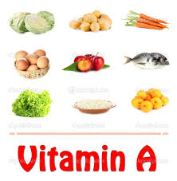

Benefits of Retinal
What Benefits of Retinal?
Vitamin A is one type of fat-soluble vitamin. Although the term vitamin A often refers to retinol compounds, but this group consists of several other compounds, namely retinol. Functions and Benefits of Vitamin A. Here are some of the benefits of vitamin A for the human body. Eye Health Vitamin A has an important role in the health of human vision. This vitamin helps channel objects received by the retina of the eye to the brain as an image. Compounds that play a role in this case is retinol. Antioxidants One form of Vitamin A, known as Beta Carotene, is a compound with antioxidant activity that can counteract free radicals. Both free radicals are derived from oxidation of the body and pollution from the outside. Immune System Vitamin A also serves as an external inum system that protects the body from free radicals, viruses, bacteria, fungi and pathogens. Adequate daily intake of vitamin A means boosting immunity. Prevent Cancer Vitamin A is able to fight cancer by suppressing the growth of DNA in cancer cells. Wound Healing Vitamin A can help maintain healthy tissue in our body. So it can help speed up the wound healing process. Vitamin A growth is also indispensable for the growth and development of embryos in the fetus, and determines the genes in the process of formation of embryonic developmental organs.
Consumption of Vitamin A
- Daily dose: 750 mcg
- Symptoms of vitamin A deficiency: Reduced vision, dry skin.
- Excess vitamin A: Liver damage, bone, and visual impairment. Excess marks of vitamin A are yellow palms and eyelids.
- Food sources of vitamin A: Liver, carrots, dairy products, red yam, pumpkin, mango, spinach, broccoli, kale, cheddar cheese, chili.
Popular Post
When vitamin A deficiency, the body can experience respiratory distress and even blindness, while excess intake of vitamin A can cause nausea, headache, joint pain, irritation, and hair loss.